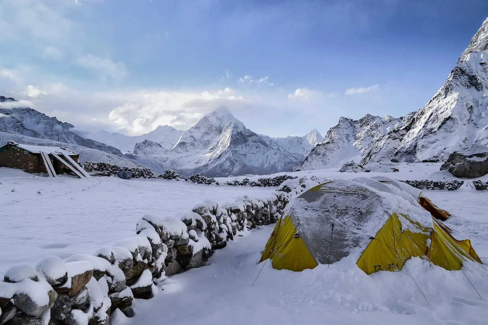

필름 시뮬레이션 296종
실제 필름을 모델링한 3D LUT를 촬영 사진에 자동 적용. 수신과 동시에 필름룩이 입혀진 사진을 받습니다.
Cinema Camera Controller
카메라를 USB·Wi-Fi로 연결하고, 촬영과 동시에 필름 시뮬레이션이 입혀진 사진을 받아보세요.
Nikon · Canon · Sony · Fujifilm · Panasonic · OM System 등 955개 기종 지원USB(PTP) 또는 Wi-Fi STA(공유기) 모드를 지원하는 카메라라면 사용할 수 있습니다.
대표 지원 기종
USB-C(OTG) 케이블로 연결하는 PTP 호환 카메라. Nikon, Canon, Sony, Fujifilm, Panasonic, OM System(Olympus), Pentax, Ricoh, Leica 등 주요 제조사를 지원합니다.
무선(Wi-Fi) 연결은 현재 Nikon Z 시리즈에서 지원됩니다(Z6·Z8 실기 검증). Canon·Sony·Fujifilm 무선은 검증 진행 중이며, 지원 확대 예정입니다. 그 외 제조사는 USB 유선으로 바로 연결할 수 있습니다.
USB로 연결하든 Wi-Fi로 연결하든, 촬영·수신·필름 적용 등 모든 기능은 동일합니다.
아래 목록은 PTP(USB) 호환 기종입니다. Wi-Fi 배지가 붙은 기종은 무선 연결을 지원합니다.
목록 외 실사용 확인
드라이버 목록에는 없지만 CamCon 사용자가 실제 연결에 성공한 기종입니다.
일치하는 모델이 없습니다.
카메라가 PTP/MTP USB 연결을 지원한다면 대부분 사용할 수 있습니다. 확실하지 않다면 문의를 주시면 확인해 드립니다.
Features
실제 필름을 모델링한 3D LUT를 촬영 사진에 자동 적용. 수신과 동시에 필름룩이 입혀진 사진을 받습니다.
표준 PTP 기반의 안정적인 유선 연결. USB-C(OTG) 케이블을 꽂으면 카메라를 즉시 인식합니다.
마음에 드는 레퍼런스 사진 한 장의 색감을 추출해, 내 사진에 그대로 입힙니다.
PTP/IP로 케이블 없이 촬영한 사진을 즉시 수신합니다. 끊겨도 자동으로 재연결하고, 백그라운드에서도 계속 받아옵니다.
카메라 전원만 켜면 mDNS·SSDP 검색으로 자동 탐색하고 재연결합니다. 매번 설정할 필요가 없습니다.
RAW(NEF 등) 원본을 손상 없이 다운로드합니다. 필름룩은 JPG 사본에만 입혀, 원본은 그대로 보존됩니다.
실시간 프리뷰를 보며 ISO·셔터·조리개·화이트밸런스를 조작합니다. 화질은 속도·균형·품질 3단계.
인터벌을 정해 무인으로 장시간 촬영하는 기능을 준비하고 있습니다. 지금 촬영은 한 장씩 원격 셔터로 이뤄집니다.
흑백부터 인스턴트, 컬러 네거티브까지. 실제 필름의 톤 커브와 색을 3D LUT로 재현했습니다.


필름을 눌러 바꿔 보고, 손잡이를 드래그해 적용 전후를 비교하세요.
필름은 촬영 직후 수신 파이프라인에서 입혀지고, RAW 원본은 건드리지 않습니다. PRO에서는 전체 카탈로그와 필름·색감 동시 적용이 열립니다.
적용 필름: Classic Chrome
마음에 드는 사진에서 색 분포를 통계로 뽑아 내 사진에 옮깁니다. 카탈로그에 없는 색도 레퍼런스 한 장이면 따라갑니다.

강도 0%는 원본 그대로, 100%는 레퍼런스의 색 분포에 완전히 맞춥니다. 필름과 마찬가지로 JPG 사본에만 적용되고 RAW 원본은 건드리지 않습니다. PRO에서는 필름과 색감을 함께 걸 수 있습니다.
USB-C(OTG) 케이블로 폰과 카메라를 연결합니다.
앱에서 USB 연결 권한을 허용합니다.
자동 인식·연결이 완료되면 바로 촬영을 시작합니다.
카메라와 폰을 같은 공유기에 연결합니다.
앱에서 카메라를 검색해 선택합니다.
첫 연결 시 카메라 본체에서 "연결 허용"을 승인합니다. 이후에는 자동으로 재연결됩니다.
위 세 단계는 어느 카메라나 같지만, 카메라에서 눌러야 할 메뉴는 제조사마다 다릅니다. 실제 화면 사진과 함께 하나씩 짚어 드립니다.
Pricing
무료로 시작하세요. PRO 유료 플랜은 준비 중입니다.
USB(PTP) 또는 Wi-Fi STA(공유기) 모드를 지원하는 카메라라면 사용할 수 있습니다. 연결 방식에 따른 기능 차이는 없습니다. 위 "전체 지원 모델 보기"에서 기종을 검색해 확인할 수 있습니다.
RAW 원본은 그대로 보존됩니다. 필름 시뮬레이션과 색감은 JPG 사본에만 적용되며, RAW(NEF 등) 파일에는 어떤 변형도 가하지 않습니다.
포그라운드 서비스로 동작하므로 다른 앱을 쓰는 동안에도 계속 수신합니다. 다만 앱을 완전히 종료하면 수신은 중단됩니다.
Android 10 이상, 64비트(arm64) 기기가 필요합니다.
로그인 화면 또는 설정 → 추천 코드 등록에서 입력할 수 있습니다.
Nikon Z 시리즈는 첫 연결 시 카메라 본체 화면에서 "연결 허용"을 승인해야 합니다. 폰 핫스팟을 켜거나, 카메라와 폰이 같은 공유기(Wi-Fi)에 있어야 합니다. 그래도 안 되면 카메라의 Wi-Fi 기능을 껐다가 다시 켠 뒤 앱에서 다시 검색해 보세요.
카메라 연결(USB·Wi-Fi), 촬영과 사진 수신, 대표 필름 시그니처 5종은 무료입니다. 무료에서는 사진이 장축 2000px로 저장됩니다. PRO에서는 필름 시뮬레이션 296종 전체와 원본 해상도 저장, RAW 다운로드, 라이브뷰 고급 제어가 열립니다.
네. 지원 카메라에서는 앱 원격 촬영뿐 아니라 카메라 바디 셔터로 찍은 사진도 자동으로 폰에 전송됩니다. 라이브뷰를 켠 상태에서도 동작합니다.
현재 Android 전용입니다(Android 10 이상, 64비트 arm64 기기). iOS 버전은 제공하지 않습니다.
셔터를 누르는 그 순간, 필름룩 사진이 폰에 도착합니다.